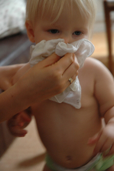
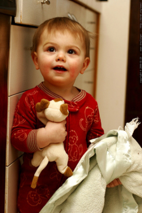

It is not uncommon for an infant cold to be the first storm a mother must weather. It's so hard to see your infant all stuffed up and uncomfortable! Here are some
basic guideliness on how to relieve cold-induced misery.
Of course, before you can treat the cold, you should take a step back and make sure he actually has an infant cold. The common cold and the flu have a
lot of the same symptoms. Learn the slight differences between a cold and the flu. The difference could mean a doctor's visit!
Conquer the Cold at Home
Hyping Up Infant Hydration
The first thing you should attend to when dealing with any sickness is your baby's hydration. Fluids will help loosen the congestion in your
baby's nose (which is the biggest issue when dealing with an infant cold).
A stuffed nose will keep your baby from long-feeding sessions, so offer a bottle
or breast every hour or so to keep him hydrated. If your infant resists drinking and you're worried about dehydration, use an eye dropper to
squirt a small amount of Pedialyte into his mouth every few hours.
If your infant is around 12 months (or older), offering water or Pedialyte in a glass with a straw will make drinking an adventure.
Honestly, I could get my children to drink chicken broth by offering it with a straw.
Homeopathic Solutions
When it comes to any kind of congestion, introducing helpful vapors is always a winner.
Adding 5-10 drops of
eucalyptus oil
to the shower floor before running the water is a natural way of opening up your baby's nasal passages.
Merry Mother subscribers Mike and Cristi C. shared they gave their infant some chicken broth (slightly warmed and sodium-free). Confirm with your doctor
that this is okay before trying, since it may depend on the age of your baby.
Another great home-remedy is something called Sniffy Sprinkles.
This is a safe, non-addictive, FDA-registered, natural remedy that contains
100% homeopathic ingredients chosen specifically to help relieve nasal and chest congestion for easy breathing in babies and young children.
It opens airways by helping to loosen up mucus and phlegm so you can effectively suck them out (see "Stuffy Nose Solutions" below for help with this)
Unlike many natural remedies, Sniffy Sprinkles is made in a FDA and GMP registered pharmaceutical facility under the supervision of qualified homeopaths and pharmacists.
That way you know it's safe to take and will be just as effective as it claims.
Stuffy Nose Solutions
That adorable nose has turned into a cesspool of crusty nastiness that you can barely look at, let alone touch! Keep your baby
happy (and other babies healthy) by staying a step ahead of the snot.
Using a cloth diaper or t-shirt when you wipe her nose will prevent over-irritating the skin. A light layer of Vaseline or Lansinoh creme on her
upper lip will also protect from chapping. Why add to her misery? Keep the upper lip moisturized and she won't fight so hard to avoid a wipe.

{Photo by kellyandapril}
Once you've addressed her drippy nose, it's time to make her a little more comfortable. Each infant has to learn that breathing through the mouth
is an option. Until this happens, a stuffed-up nose can be extremely uncomfortable (and cause crankiness).
The Bulb Syringe: Hate it or Love It
Help her out by using a bulb syringe (or nasal aspirator) to suck the mucus out and open up her nasal passages.
Here's how you do it:
Rest your baby in your lap with her head tilted slightly back.
Using an eye dropper, gently squirt a drop or two of saltwater (also called saline) solution into each nostril (found in any drugstore).
When the bulb is outside your baby's nose, gently squeeze to let out all the air.
Gently place the tip in the nostril and release, the suction will suck out the mucus (and your baby will likely scream bloody murder).
Repeat on the other side.
When finished, wash with warm soapy water.
Follow this procedure as often as necessary to help her breathe better. Doing this right before offering a breast or bottle will help her
her feed longer (and sleep better).
My Adventures with a Nasal Aspirator
Bella recently came down with a nasty stuffy nose. After getting super frustrated with a
crappy plastic bulb syringe, we "splurged" and spent $25 on a nasal aspirator.
My goodness.
Why didn't I do this two kids ago!
Granted, it took two of us to get the job done, even at 3 months (one to hold down arms, one to do the dirty work). But the result was no less than miraculous.
I had no idea that little nose could hold that much snot! We especially hit pay-dirt when I plugged the other nostril while sucking out the other.
Don't worry. She could still breathe (ahem, scream) through her mouth. She pouted for the next ten minutes, but the 5 hours of uninterrupted sleep was
worth every decibel.
If you're a little fuzzy at the difference between a bulb syringe and a nasal aspirator, here's what it looks like.
It was hard to spend the $25
at first, but I'm SO glad we did.
Update! Yes, I'm still happily sucking snot out of Bella's nose (she's 15 months now). However, I was recently introduced to another great
(literal) snot-sucker for those with a strong stomach and desire to save money. The Nosefrida is a design from Sweden, where your lungs do all the work. It's incredibly effective, and has a
long tube, so you won't get any "surprise snacks". You can see it at Amazon.
The Air In There...

{Photo by Sean Dreilinger}
The humidity of the air in your house can really help (or harm) your efforts to treat your baby's cold.
If your baby's congestion seems to be settled in her little chest and seems to be wheezing (listen at her chest for a wraspy-sound),
bundling your baby to go for a walk in cold crisp air is exactly what she needs. The cold air will help shrink the congestion in her lungs.
Snowstorm outside? Is a walk impossible? Open up the freezer and let your baby breathe in some of the cold air coming out.
If you hear wheezing, always call your doctor for an appointment. A barking cough and wheezing breathing could be a sign of the croup or other ailment
you'll need a prescription to treat.
If you're wanting to help him with nasal congestion, first suck out the snot, and then waltz yourself (and your infant of course) over to the bathroom. Sitting in a hot steam-filled bathroom
for 15 minutes will help keep that little nose open. Dry air thickens nose goobers into crusts of nastiness, making congestion worse. Humid air gets things moving.
The Humidifer: Your New Best Friend
Another great treatment tip is to keep a humidifier running in the room. Homes with central heat (which is probably 99% of us) tend to dry out your baby's mucus
membranes and leave them inflammed and irritated.
A warm-mist humidifer
is a great way to add moisture into the nursery air. Many people will suggest only a cool air humidifer, but I think
adding freezing-cold air to an already-cool room in the winter is just nutso. (I live in Wisconsin...)
The main objection people have about warm-air humidifiers is that they can cause burns. That has an easy solution. Only turn it on when your
baby is in the crib. Naturally, placing it (and the cord) out of reach is always a good idea, just in case.
A cool-mist humidifer is a good choice if you wish
to keep it on during the day or if your baby likes to sneak out of his crib at night. You will eliminate the burn-risk, but will have to maintain
it regularly. Cool-mists humidifiers need to be rinsed daily (or at least every other day) to prevent mold from developing on the filter. Molds and colds don't mix well.
You don't have to purchase a stodgy old "adult" humidifier for your infant's nursery. Recently some other whimsical designs have been introduced. I espcially like the adorable
animal designs
or the trendy art nouveau raindrop.
Setting up the Crib for a Good Night's Rest
Good rest is important for your baby (and for you). Before you put your baby to bed, place a pillow or some rolled up towels under the crib mattress
so that he is sleeping on a slight incline.
The incline will help prevent the constant drip-drip-dripping into the back of his throat that leads to nighttime coughs.
However, make sure you place the pillow under the mattress, not on it. It becomes a SIDS risk if it is on the mattress .
Some parents have found that putting baby to bed in the infant carrier is also a helpful sleeping tool for the infant cold.
However, this is not recommended if your baby is a preemie. Studies have shown
that letting such a small baby sit in a car seat for too long can affect breathing or dangerously increase the heart rate .
What About Infant Cold Medication?
Since an infant cold is caused by a virus, antibiotics are useless. However, medication can be helpful in treating some of the symptoms.
Just remember that less is best when it comes to medicating your infant.
Infant cold medicine should never be given without talking with your doctor first. These medications have side effects that can
make using them pointless. For example, some cough suppressants can over-stimulate your baby, keeping him awake (fun for you!) and even in some ca
ses dangerously elevating his heart rate.
Infant Cold Medicine Recall
Several infant cold medicines were recalled last year. See what they were and check your cabinets!
Doctors recommend acetaminophen (infant Tylenol) or ibuprofen
(infant Motrin) to help babies older than 6 months for fever reduction and as a pain reliever. Acetaminophen is taken every 4 hours, and ibuprofen
every 6. In severe cases (such as in teething or a high fever) the medication can be alternated for maximum relief. Speak to your doctor about how to do that.
Preventing an Overdose
Providing medication by using your baby's weight is the safest way to provide medication. If you don't remember his weight, of it's been a while, you
can easily figure it out at home.
Weigh yourself alone (the not-fun part), then weigh yourself holding your baby. Subtract the two and you have
your infant's current weight!
Sneezing and coughing is the body's natural defense against viruses, so it may not always be beneficial to prevent them. If your doctor gives
you permission to purchase an over-the-counter (OTC) infant cold medicine, choose only single-purpose medications.
"Cough AND Cold" medicines have
multiple medications in them (oftentimes with acetaminophen or ibuprofen as well), making it easier for you to accidentally overdose your baby by
giving Motrin or Tylenol as well.
Keep in mind that if bacteria settles in it's only a short hop away from the ears, starting an ear infection.
From there it's a small leap to the eye, and you're dealing with pinkeye.
If your baby's mucus is gray or green or if the yellow thick mucus stays around longer than a few days, call your doctor.
Bacteria may have decided to join the party - and that is treatable with antibiotics!
From snot-sucking to crib-ramping, all these things are helpful in your battle against the common infant cold. And since the average
baby will get 6-8 colds in his first year, you'll have plenty of opportunities to practice!
On the other hand...avoiding the baby cold in the first place could be an even better battle strategy than
successfully treating it when it arrives...
I just subscribed to the site, and I'm very happy I did. I have worked in the medical field for several years and love to have good resources for when things come up... ~ Crystal S.
What a great site and thanks for having it available! ~ Bernadette W.
I'm very excited to start receiving the newsletter. I've checked out your site a couple times and I loooovve how it's arranged, your language, and tips - it's great! ~ Emily N.
Heather, I can't express how happy I am I discovered your site! ~ Liza T.
Thank you Heather, for your wonderful newsletter. There is always something new! ~ Desiree T.
I'm a 1st time young mom, 23 and single, so I have found very very helpful...I can't seem to stop myself telling everyone I know about you, some thought you were my mom! ~ Vuyiswa N.
Your website is very helpful and I discovered a couple of great online stores. 'Cause I'm not a big reader, it is very nice that I can find the most important information through your
website. ~ Tonya G.
Thanks Heather! Your Milestone eBook is SO detailed and so correct. My son is doing all or most of the things and many are not mentioned in the usual books/sites. Great job and keep it up! ~ Anwesha C.
Thanks so much for creating such an AWESOME website. I really appreciate your sense of humor and real writing style. ~ Andrea Z.
My baby refused all bottles until you showed me the MAM bottle. Thank you so much for the recommendation. I wouldn't have known about them if not for your website. ~ Jennifer at Sweet Lilly ConfectionsThank you ladies! Talk about great motivation to keep writing...


 I just subscribed to the site, and I'm very happy I did. I have worked in the medical field for several years and love to have good resources for when things come up...
I just subscribed to the site, and I'm very happy I did. I have worked in the medical field for several years and love to have good resources for when things come up...